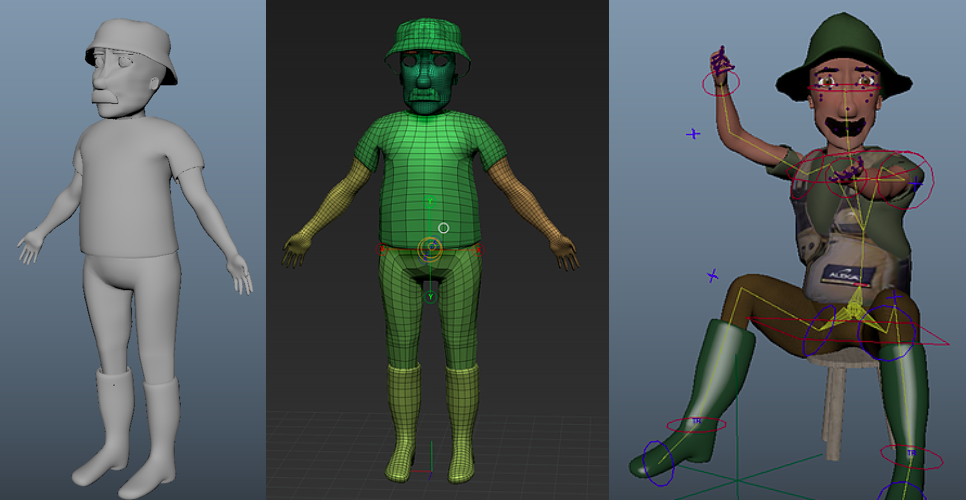
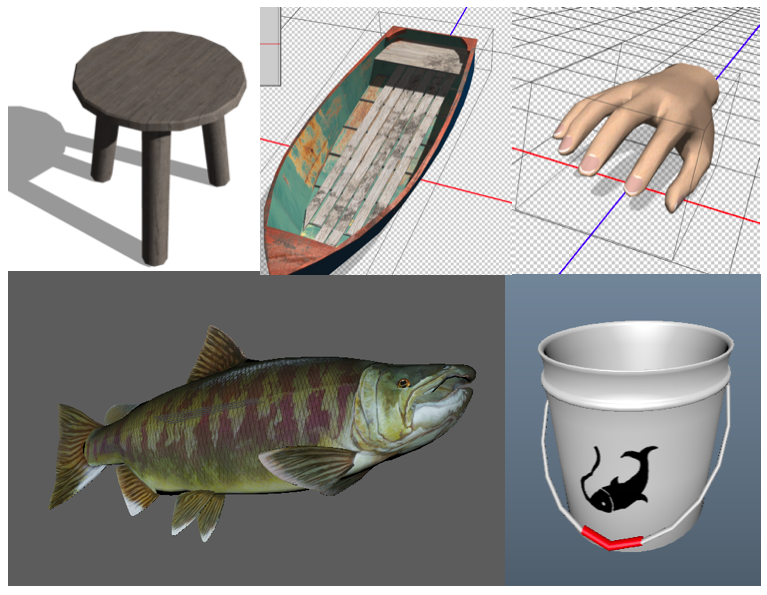

Oct 2017 | Producer & Sound Designer, Entertainment Technology Center, Carnegie Mellon University
The Other Day is an interactive storytelling world with heart warming story using fishing interaction. The guest will fish with the father making emotional connection with him through the game experience. The guest realizes that the fishing moment is the past memory with the father at the end of the experience.
Xuefan Zhou xuefanz@andrew.cmu.edu
Sijie Ren sijier@andrew.cmu.edu
Bryan Kim bryank1@andrew.cmu.edu
Shuo Wang kiryuuxxx@gmail.com
Seonwoo Park seonwoo1@andrew.cmu.edu
Oculus Rift, Oculus Touch, TV screen
The guest is on a lake with a father character. It is the guest's first time fishing, so the father will teach the guest how to fish. Each moment when the guest fish, the father will try to connect with the guest through dialogue. There are five fishing moments: catching a fish by following instructions from father, catching another fish, catching a small baby fish, big fish running away, and catching the big fish. For each moments the father will give a life lesson, which connects the guest with the father character as if he was the real father of the guest. After catching the big fish, the father wants to take a photo of him with the big fish. With the camera flash, the scene changes, the boat is rusty, and the season turns into Autumn. This indicates the fishing moment with the father was a memory. The guest will cast the rod and the ending credit will show up. Ending credit includes real pictures of teammates with their father, which enhances the emotional experience through the whole game.
First, our team came up with a character to engage. Since we were making interactive storytelling, we thought of a character that our guest could empathize instantly. Our first choice was helping a youth, such as princess. The other one was family figure. We concluded that family figure is suitable to make our guest emotionally attached.
Then, we brainstormed an activity that a person can do with their family. For the story, being in an unfamiliar area, such as woods, was suitable to interact with the character. We concluded that fishing is the most suitable activity since it was fresh interaction in VR. In addition, by confirming our interaction, it was easy to solidify our virtual character as a father.
We tried hard to come up with a story that would connect the guest and the father character. At first, the story was fulfilling father’s dream: catching a legendary big fish. However, as we build up a story around the father figure, the emotional connection between the guest and the father character went vague. Unnecessary story of fish made the story complex and hard to understand. Therefore, we decided to make a normal day story that one recalls whenever they go to that place.
Even though we eliminated unnecessary stories that ruins the relationship with father, we wanted to have an emotionally impactful point. Instead of telling the guest that this is a memory, we put that twist at the last of the interactive movie so we can have a huge emotional scene.
Although we have emotional story, we kept it as dry as possible. Since everyone’s memory is different, we avoided giving limited emotion towards the father. Eventually, we had an interactive movie about just a normal day that really means to someone.
Creating an environment that does not distract the guest from looking at the character was the most important thing to do. While excluding any eye candy in the scene, environment should have a calm and peaceful atmosphere.
Since our movie moves toward to the moment of revealing to the guest that this is a memory, we wanted to change the environment to set up the mood. So, we had similar but different environment for the ending scene. Yellow color made nostalgic memory of the father. The environment hints that our ending scene is autumn to enhance the nostalgic atmosphere. The time has changed from noon to sunset to hint that guest is aged.
Creating a father figure was the most important task since he is the main and the only character that the guest will interact. By referencing kid’s animation, we tried to avoid realistic father figure (due to uncanny valley) and make it cartoonish. Also to avoid uncanny valley, rather than using a real mouth or mouth animation to talk, we used mustache. We did not want to limit the race or appearance of the father so we made him bald wearing hat who has brown eyes and black mustache.
We implemented a unique fishing interaction with the Oculus Touch controller. By rotating one of the controllers, guests can control the fishing rod and experience the storytelling world intuitively. We also tried the simulation for the fishing rod to make it bent based on the size of the fish. In addition, we built a screen capture function that creates an important ending moment for the story. For the father figure, we tried several simulations of eyeball rigging to build a sincerer and natural character.
Creating the 3D assets are critical for the guest experience since the guest will interact with these objects in our virtual experience. The assets including the boat model, various size of fish model, hand model, model of camera and fishing rod and other props for the outdoor fishing scenario. They also served as the important triggers of the key plots of the narrative. Based on the storyline and environment, we tested the game to decide where and when would be a great fit for putting the 3D assets.
I composed the background music to invoke a pleasing and nostalgic emotion from the VR world. Depending on each level of the story, I changed musical instruments or added more layers to raise tensions in the experience. For the ending scene, I made a variation of the main theme which can create an impactful emotion by using a dramatic sound with strings.
Adding ambient sounds and various sound effects was helpful to create a natural and peaceful atmosphere and make the situation believable.
Since the conversation with the father figure leads the whole story and experience, I recorded the voice-over parts with a voice actor and polished the tones to improve sound quality by creating a sense of outdoor space.